rasterVis
The
raster
package defines classes and methods for spatial raster data access and
manipulation. The new rasterVis package complements raster providing
a set of methods for enhanced visualization and interaction. The
stable release of rasterVis can be found at
CRAN. The
development version is at
R-Forge.
Let's show some of its functionalities with some examples, using data from the CMSAF project as described here (download data).
library(raster) library(rasterVis) old <- getwd() ##change to your folder... setwd('CMSAF') listFich <- dir(pattern='2008') listNC <- lapply(listFich, raster) stackSIS <- do.call(stack, listNC) stackSIS <- stackSIS*24 ##from irradiance (W/m2) to irradiation Wh/m2 setwd(old) idx <- seq(as.Date('2008-01-15'), as.Date('2008-12-15'), 'month') SISmm <- setZ(stackSIS, idx) layerNames(SISmm) <- month.abb
Level plots
The first step is to display the content with a levelplot:
levelplot(SISmm)
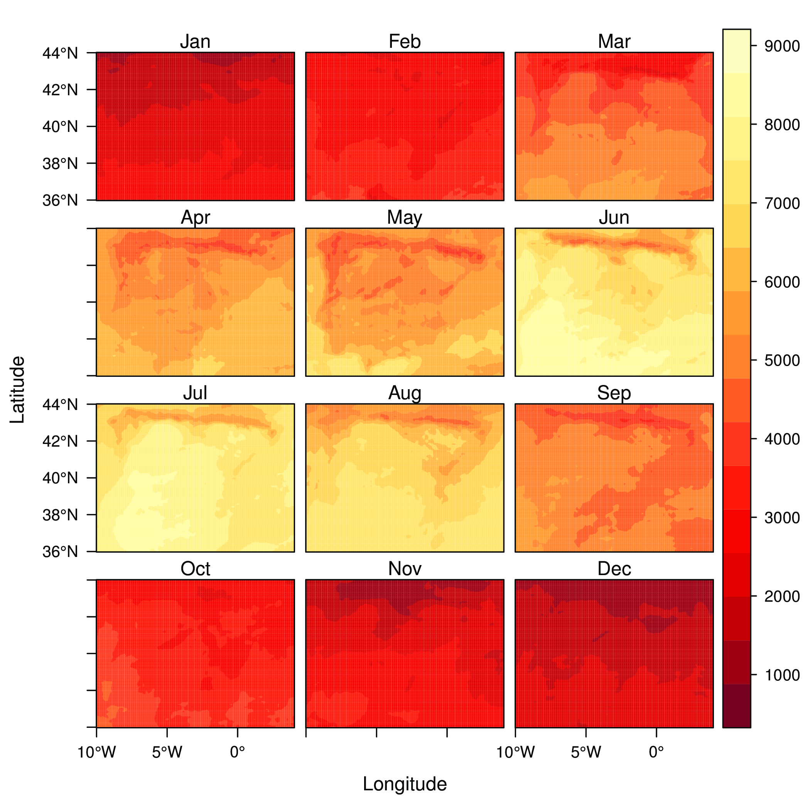
If only one layer is chosen, this method displays a marginal plot of a function across each coordinate:
levelplot(SISmm, layers=1, FUN.margin=median, contour=TRUE)
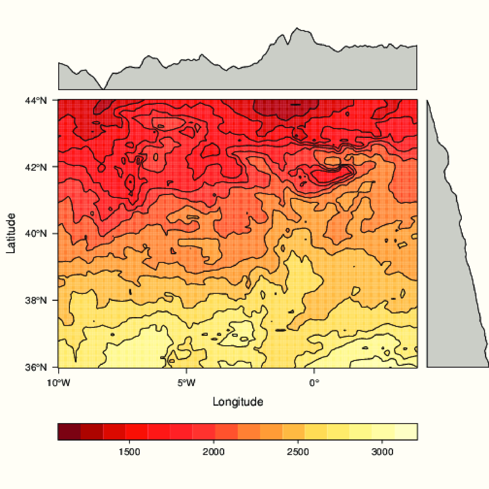
The result of this call is a trellis object. The latticeExtra package
provides the layer function to add contents. For example, let's add the administrative borders.
This information is available here:
library(maptools) proj <- CRS('+proj=latlon +ellps=WGS84') ##Change to your folder mapaSHP <- readShapeLines('ESP_adm/ESP_adm2.shp', proj4string=proj) p <- levelplot(SISmm, layers=1, FUN.margin=median) p + layer(sp.lines(mapaSHP, lwd=0.8, col='darkgray'))
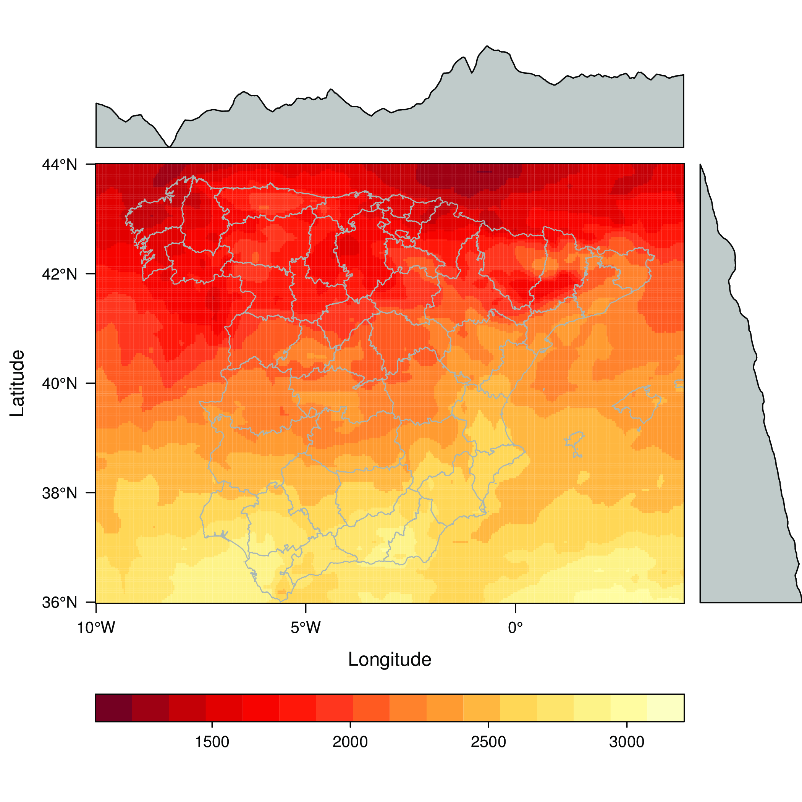
Themes
The previous plots used the default theme of rasterVis,
rasterTheme. This theme defines a sequential palette with yellow,
orange and red. There are three more themes in rasterVis: GrTheme
(with a grey palette), BTCTheme (defined with the BTC palette of
the hexbin package) and RdBuTheme (with a diverging palette with
red and blue).
The irradiation of August is:
Aug <- raster(SISmm, 8)
and its overall mean is calculated with cellStats:
meanAug <- cellStats(Aug, mean)
The diverging palette is specially well suited to this data:
levelplot(Aug-meanAug, par.settings=RdBuTheme)
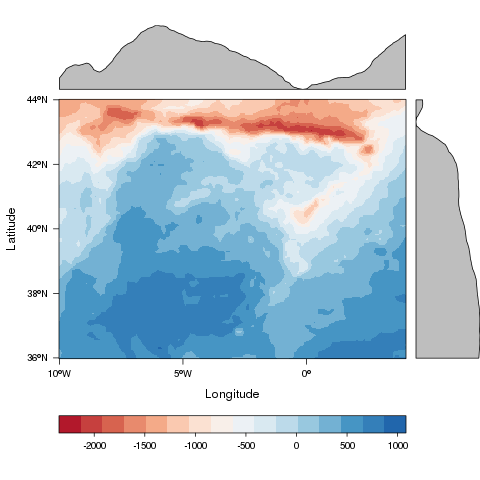
Besides, it is easy to define a new theme with a different palette. For example, using a sequential palette from colorspace:
library(colorspace) myTheme=rasterTheme(region=sequential_hcl(10, power=2.2)) levelplot(Aug, par.settings=myTheme, contour=TRUE)
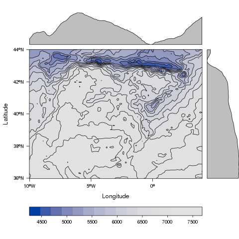
or with the colour-blindness corrections from the dichromat package:
library(dichromat) myTheme <- rasterTheme(region=dichromat(terrain.colors(15))) levelplot(Aug, par.settings=myTheme)
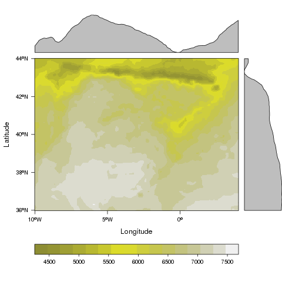
Scatterplots and histograms
There are methods to show scatter plots and hexbin plots of the layers
and coordinates of a Raster object:
##Relation between the January & February versus July radiation for four ##differents longitude regions. xyplot(Jan+Feb~Jul|cut(x, 4), data=SISmm, auto.key=list(space='right')) ##Faster with hexbinplot hexbinplot(Jan~Jul|cut(x, 6), data=SISmm)
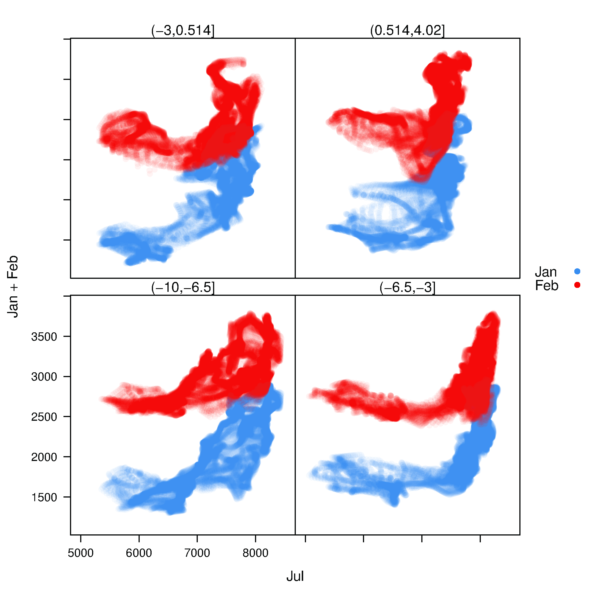

…a method for scatter plot matrices:
splom(SISmm)
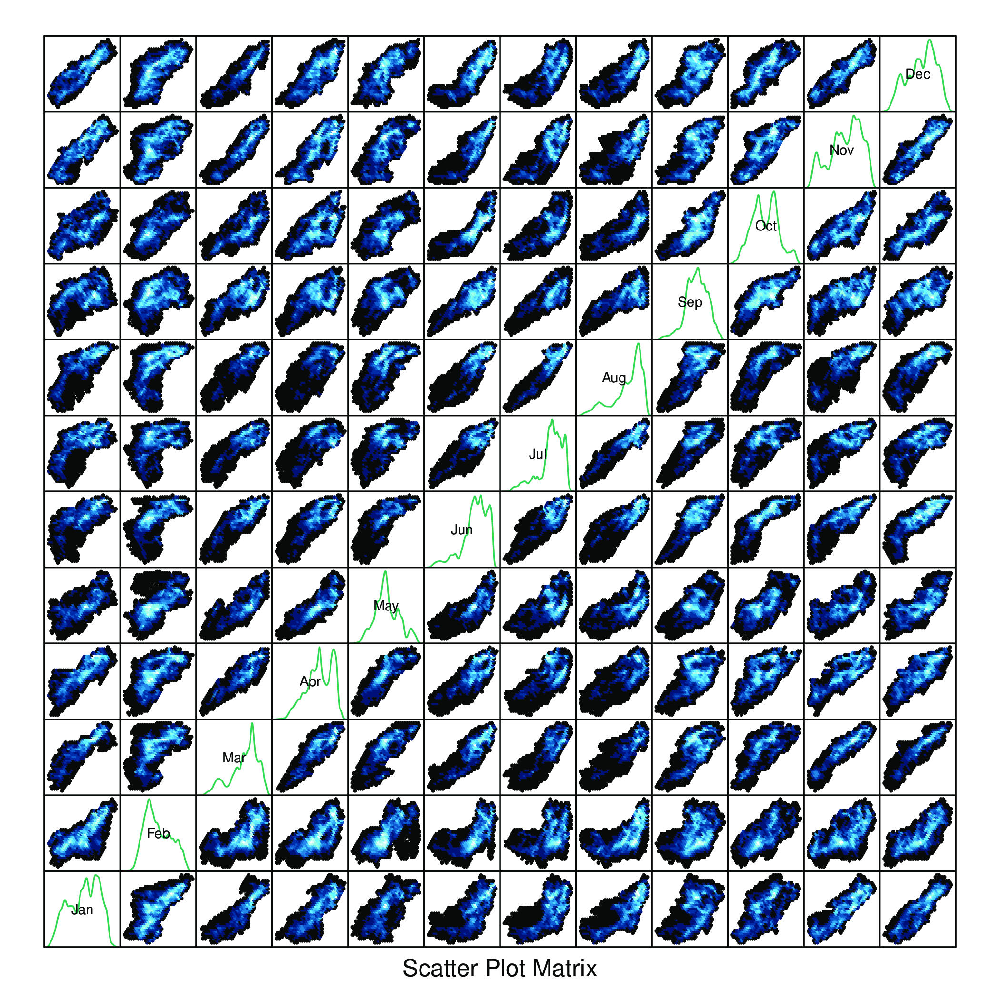
..and methods for histograms, box-and-whisker and violin plots or density estimates:
histogram(SISmm) densityplot(SISmm) bwplot(SISmm)
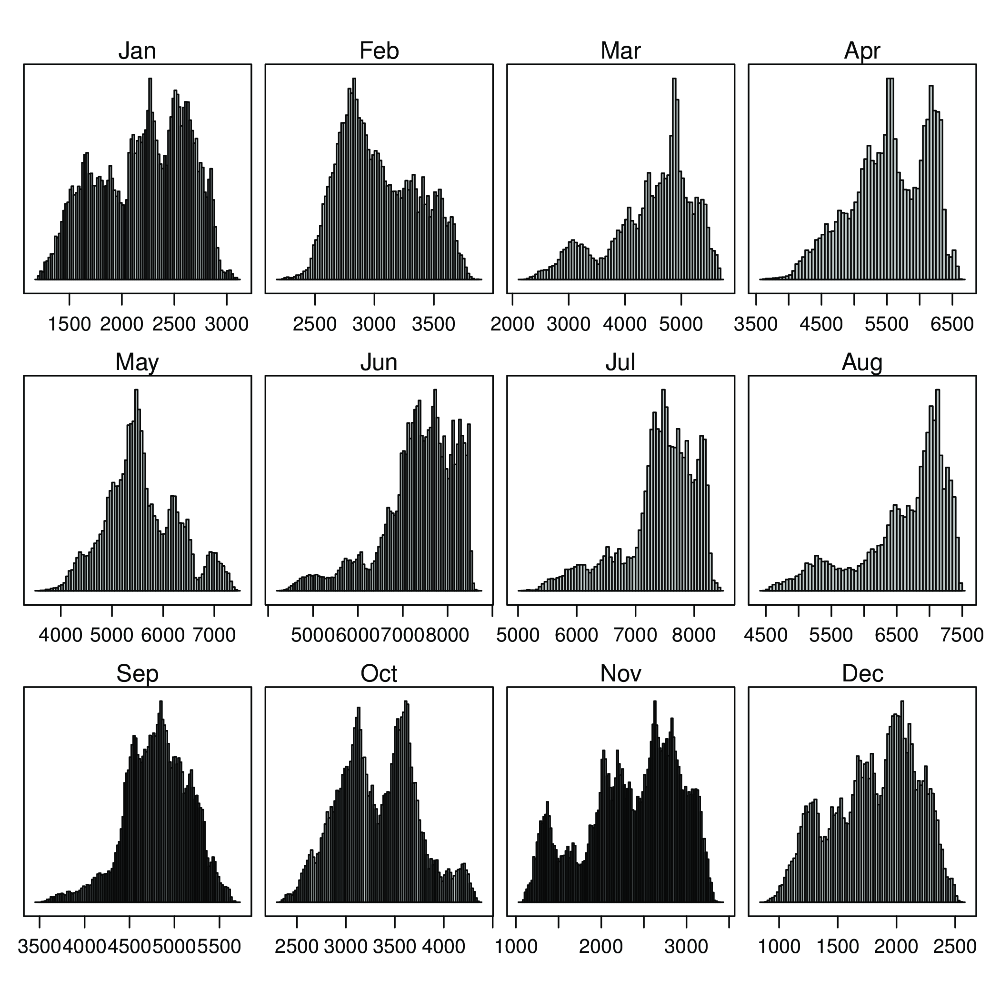
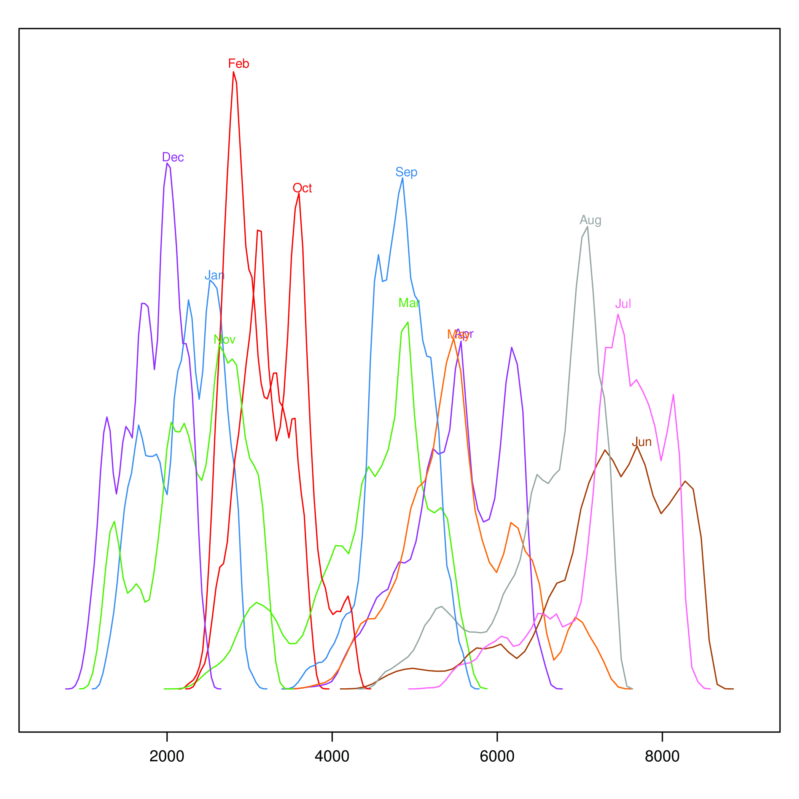
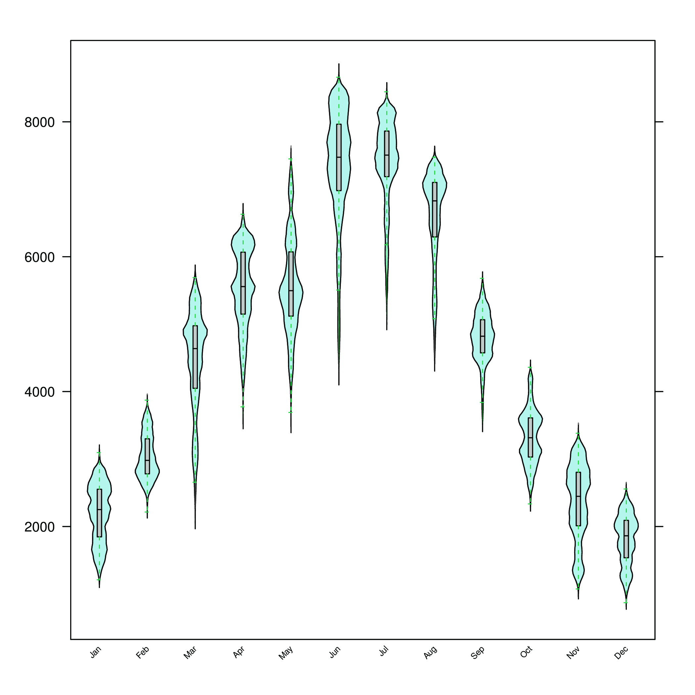
These methods accept a FUN argument to be applied to the z slot of
the Raster object. The result of this function is used as the grouping
variable of the plot:
histogram(SISmm, FUN=as.yearqtr)
Space-time plots
The z slot of this Raster object stores a time index. This 3D
space-time Raster object can be displayed with a hovmoller diagram.
The hovmoller method uses the function xyLayer, which creates a
RasterLayer from a function of the coordinates.
f <- system.file("external/test.grd", package="raster") r <- raster(f) dirXY <-xyLayer(r, sqrt(x^2 + y^2)) dirXY
For example, the next code builds a hovmoller diagram showing the time evolution of the mean value along the latitude:
hovmoller(SISmm, dirXY=y, xlab='Latitude')

The horizonplot and xyplot methods also are useful for the space-time Raster objects:
xyplot(SISmm) horizonplot(SISmm)
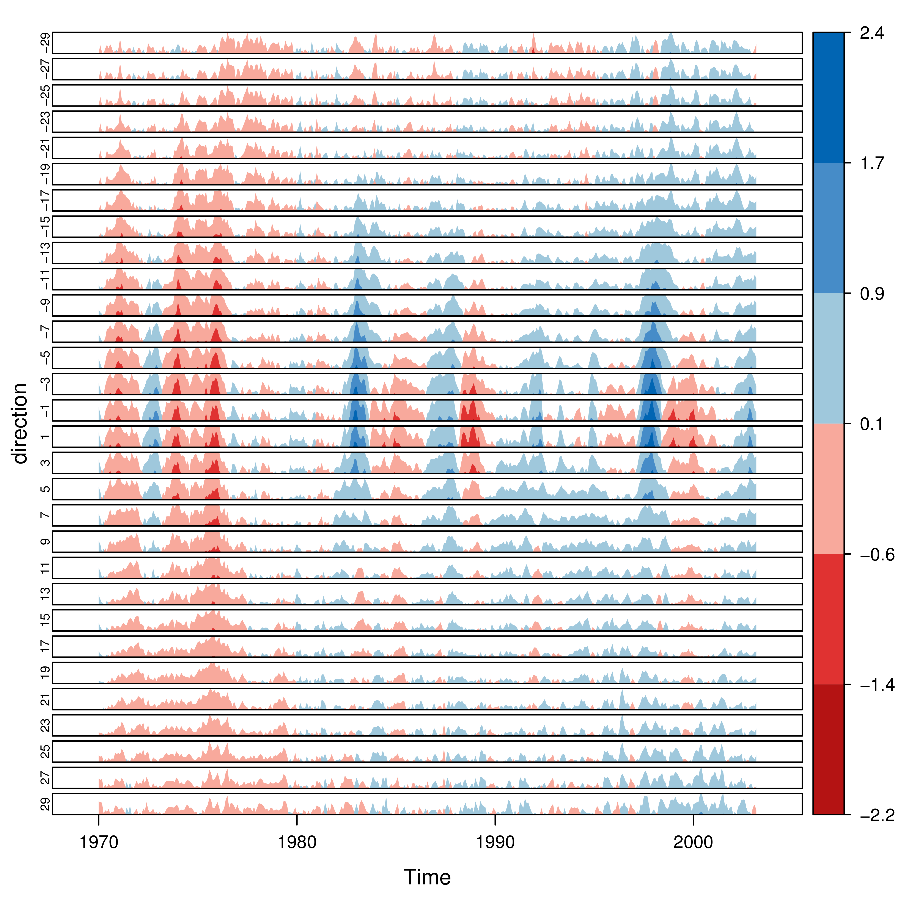
Interaction
This package includes two functions to interact with the trellis objects.
The identifyRaster method labels and returns points of a trellis graphic
according to mouse clicks. It is commonly used after levelplot,
although it can be also used after xyplot, hexbinplot or even splom:
levelplot(SISmm) ##Do not close the last graphical window. Use the left button of the ##mouse to identify points and the right button to finish chosen <- identifyRaster(SISmm, layer=3, values=TRUE) chosen
The chooseRegion function provides a set of points (in the form of a
SpatialPoints object) inside a region defined by several mouse clicks:
##Use the left button of the mouse to build a border with points, and ##the right button to finish. The points enclosed by the border will ##be highlighted and returned as a SpatialPoints object. reg <- chooseRegion() summary(reg)
Org version 7.5 with Emacs version 23
Validate XHTML 1.0